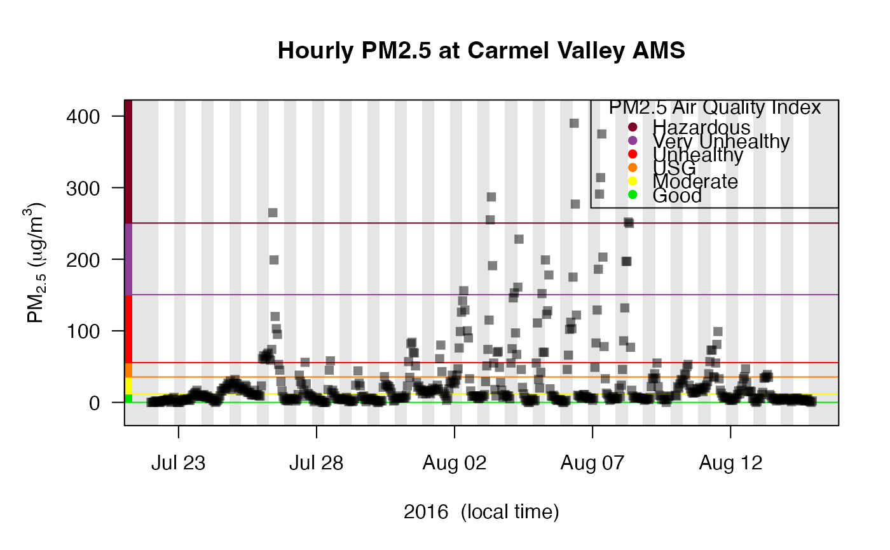
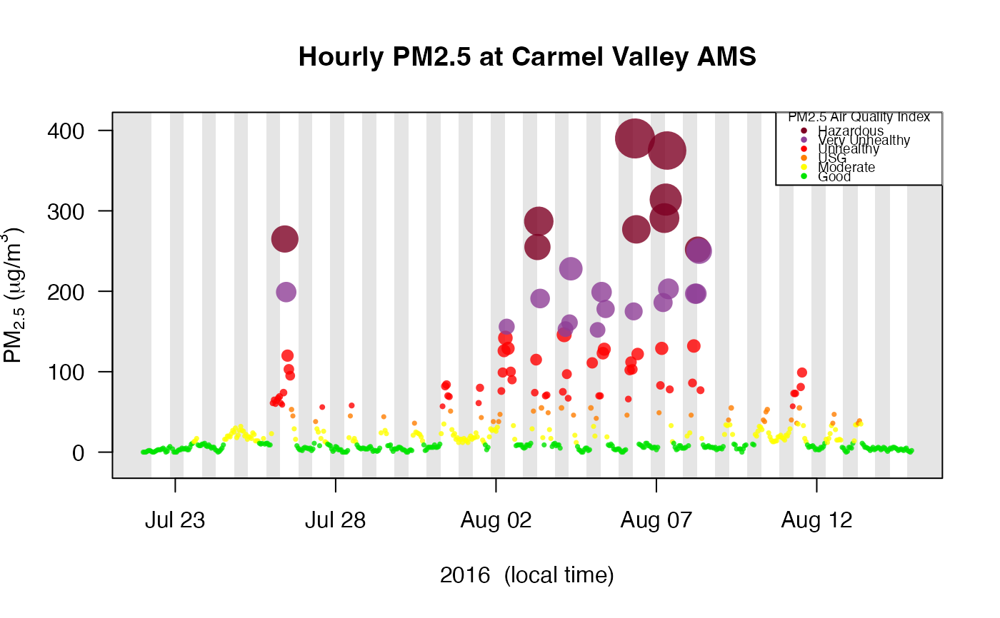

Creates a time series plot of data from a mts_monitor object. By default, points are plotted as semi-transparent squares. All data values are plotted from all monitors found in the mts_monitor object.
Reasonable defaults are chosen for annotations and plot characteristics.
Users can override any defaults by passing in parameters accepted by
graphics::plot.default.
mts_monitor object.
deviceDeploymentID used to limit plotting to a single time
series found in monitor.
Logical specifying whether to add nighttime shading.
Logical specifying whether to add to the current plot.
Logical specifying whether to add visual AQI decorations.
Named color palette to use when adding AQI decorations.
Opacity to use for points. By default, an opacity is chosen based on the number of points so that trends are highlighted while outliers diminish in visual importance as the number of points increases.
Version of NAAQS levels to use. See Note.
Additional arguments to be passed to graphics::plot.default().
No return value. This function is called to draw an air quality time series plot on the active graphics device.
On February 7, 2024, EPA strengthened the National Ambient Air Quality Standards for Particulate Matter (PM NAAQS) to protect millions of Americans from harmful and costly health impacts, such as heart attacks and premature death. Particle or soot pollution is one of the most dangerous forms of air pollution, and an extensive body of science links it to a range of serious and sometimes deadly illnesses. EPA is setting the level of the primary (health-based) annual PM2.5 standard at 9.0 micrograms per cubic meter to provide increased public health protection, consistent with the available health science. See PM NAAQS update.
library(AirMonitor)
# Single monitor
Carmel_Valley %>%
monitor_timeseriesPlot()
# Multiple monitors
Camp_Fire %>%
monitor_filter(countyName == "Alameda") %>%
monitor_timeseriesPlot(main = "All Alameda County Monitors")
# Standard extras
Carmel_Valley %>%
monitor_timeseriesPlot(
shadedNight = TRUE,
addAQI = TRUE
)
addAQILegend()

# Standard extras using the updated PM NAAQS
Carmel_Valley %>%
monitor_timeseriesPlot(
shadedNight = TRUE,
addAQI = TRUE,
NAAQS = "PM2.5_2024"
)
addAQILegend(NAAQS = "PM2.5_2024")

# Fancy plot based on pm2.5 values
pm2.5 <- Carmel_Valley$data[,2]
Carmel_Valley %>%
monitor_timeseriesPlot(
shadedNight = TRUE,
pch = 16,
cex = pmax(pm2.5 / 100, 0.5),
col = aqiColors(pm2.5),
opacity = 0.8
)
addAQILegend(pch = 16, cex = 0.6, bg = "white")